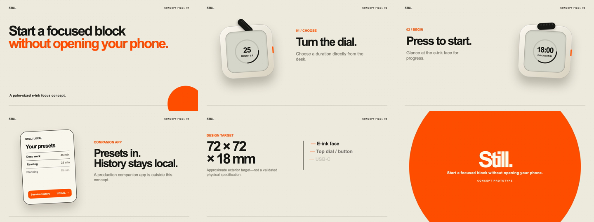
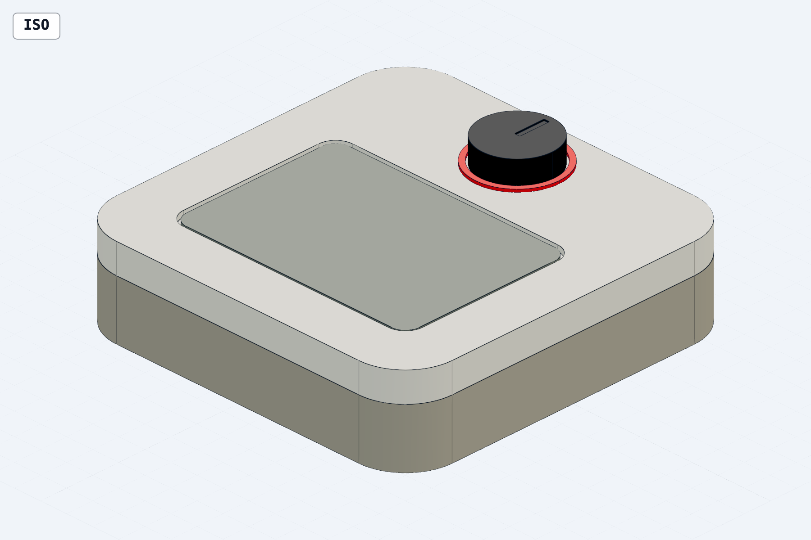

Hardware Launch / outcome 001
One idea.
Launch room.
Start a focused block without opening your phone.
Still is fictional.
Everything here was created and checked locally.
Launch film24 sec / 1080p / local render
01 / Launch site
A calm place to begin.
Waitlist behavior
A valid demo address is immediately cleared. Nothing is saved, sent, reserved, or subscribed.
Read the contract ↗02 / Launch film
Turn. Press. Glance.
Same facts, a different medium
The full launch story in twenty-four seconds.
The film uses only React, CSS, and SVG. It introduces the promise, demonstrates the desk interaction, frames the companion app, and closes on an explicitly unvalidated design target.
Inspect render evidence ↗
03 / Prototype CAD
Exterior concept,
measured honestly.

04 / Evidence
Proof, not polish alone.
SiteBuild + interaction receiptOpen ↗
WaitlistLocal data contractOpen ↗
FilmRender + provenance receiptOpen ↗
HardwareMeasured geometry reportOpen ↗
HardwareGeneration + review receiptOpen ↗
OutcomeMachine-readable manifestOpen ↗
Known boundary
The live CAD Viewer handoff failed because the installed viewer package lacks its documented launcher script. STEP inspection, measured geometry, GLB/STL exports, and four reviewed snapshots remain available. Physical fit, electronics, battery, thermal behavior, tolerances, manufacturability, certification, demand, and production readiness remain unproven.